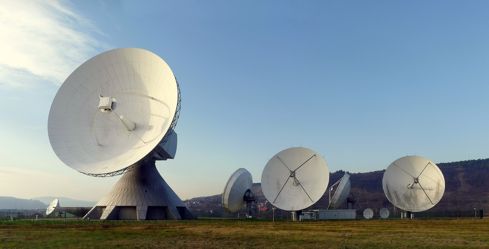

MIMO systems
Multiple-input and multiple-output (MIMO) is a smart antenna technology designed to increase the capacity of wireless communication using multiple transmit and receive antennas.
MIMO is a key technology of wireless communication beyond 5G & 6G.
Energy Efficient Communications
Energy efficient communications represent communication technologies that use low-resolution analog-to-digital converter/digital-to-analog converter (ADC/DAC) communication and other energy efficient beamforming technologies.
Full-Duplex
Full-duplex data transmission method transmits data simultaneously in both directions on a signal carrier.
Unlike half-duplex such as frequency division duplex (FDD) or time division duplex (TDD), full-duplex permits simultaneous transmission and reception, potentially doubling the spectral efficiency compared to half-duplex.

Radar
Radar is a detection system that measures the distance, direction, angle, and speed of a target using radio waves.
There are two types of joint radar-communication systems: radar-communication coexistence (RCC) and dual-functional radar-communication (DFRC) system.